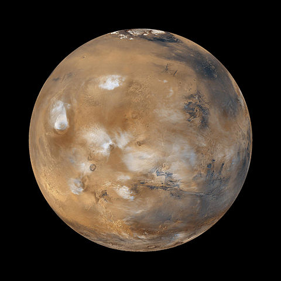

A planet is a celestial body, orbiting a star, that is massive enough to be gravitationally rounded and has
"cleared the neighbourhood" around its orbit.
"I think of space not as the final frontier but as the next frontier."
- Neil Degrasse Tyson
Unfortunately, Pluto is no longer a planet but a dwarf planet. Sometimes I think, Pluto still deserves full
planet hood.
Terrestrial planets
Mercury
Venus
Earth
Mars
Mars
Mars is named after the Roman god of war, it is often described as the "Red Planet" because the iron
oxide prevalent on its surface gives it a reddish appearance.

A computer-generated image of Mars from real data.
Semi-major axis:
227 939 100 km
Orbital period:
686.971 d
Mean radius:
3389.5 km
Venus
Venus is the second planet from the Sun, orbiting it every 224.7 Earth days.
A real-colour image of Venus processed from two filters.
The surface is obscured by a thick blanket of clouds